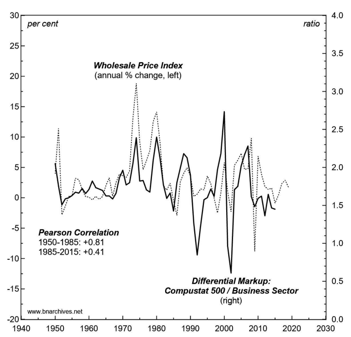
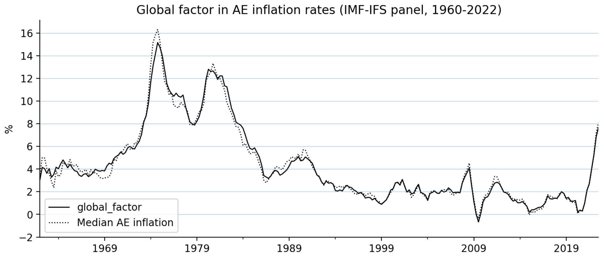
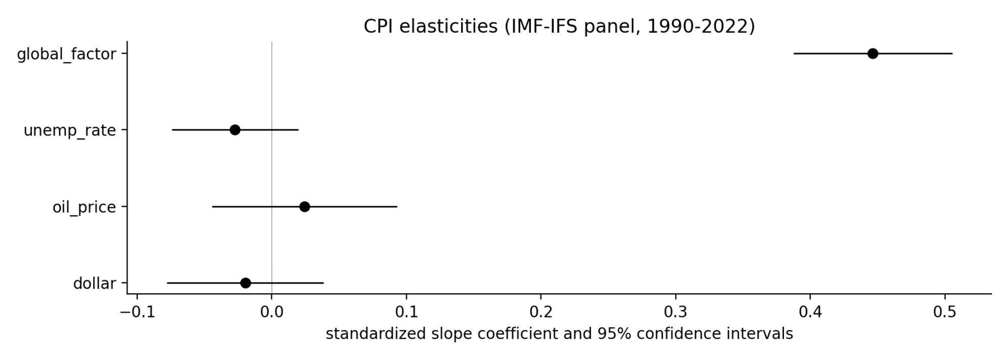

37 Inflation
Inflation is about power, not money.
Contrary to the fantasy world of neoclassical economics — in which businesses ‘take’ prices from the market — in the real world, prices are always ‘set’.
mainstream economists believe that elevated inflation is a result of “excess” aggregate demand.
37.1 Wage-Price Spiral
Roberts
A general rise in the rate of wages will result in a fall of the general rate of profit, but not affect the prices of commodities. In other words, wage rises are much more likely to lower the share of income going to profits and thus eventually lower the profitability of capital. And that is the reason capitalists and their economist prize-fighters oppose wage rises. The claim that there is a wage-price spiral and that wage rises cause price rises is an ideological smokescreen to protect profitability.
The IMF has compiled a comprehensive data analysis (pdf) of the movement of wage and price rises that refutes Bailey and Furman. The IMF “address these questions by creating an empirical definition of a wage-price spiral and applying this on a cross-economy database of past episodes among advanced economies going back to the 1960s.” So over 60 years and in many countries.
What did the IMF find: “Wage-price spirals, at least defined as a sustained acceleration of prices and wages, are hard to find in the recent historical record.
Also, there appears to be no inverse correlation between changes in wages, prices and unemployment – this classic Keynesian Phillips curve that claimed this relation has been shown to be false. And the latest empirical estimates show the Phillips curve to be broadly flat – in other words, there is no correlation between wages, prices and unemployment. No wage-price spiral.
Capitalists want ‘wage restraint’ in the face of spiralling inflation in order to protect and sustain profits.
The real aim of interest-rate hikes is not to stop a wage-price spiral but to raise unemployment and weaken the bargaining power of labour.
Alan Budd, then chief economic adviser to British PM Margaret Thatcher in the 1980s: “There may have been people making the actual policy decisions… who never believed for a moment that this was the correct way to bring down inflation. They did, however, see that [monetarism] would be a very, very good way to raise unemployment, and raising unemployment was an extremely desirable way of reducing the strength of the working classes.”
37.2 Phillips Curve
Roberts
Gavyn Davies, former chief economist at Goldman Sachs, once explained why the theory that inflation is caused by wage rises persists even though it has been discredited theoretically and empirically. Davies: “without the Phillips Curve, the whole complicated paraphernalia that underpins central bank policy suddenly looks very shaky. For this reason, the Phillips Curve will not be abandoned lightly by policy makers”.
Neoliberal ascendancy, deregulation has allowed corporations to amass pricing power.
The sharp rise in the prices of non-labor inputs that were “the likely culprits for the acceleration in inflation”. They rose because of the shutdown of key suppliers during COVID in China and other developing countries and from the loss of electronic components supply that went into the production of consumers goods and because the supply chain system was broken with the collapse of the just in time inventory methods over the last four decades. Prices in oligopolistic markets are likely to be higher than in more competitive markets “but it is not the case that this can explain the continuous rise in prices; that would require a change in the competitive conditions, something that is not clearly taken place in the last two years.”
Higher inflation can occur both with fairly competitive or oligopolistic market structures. In the late 19th century, the so-called Gilded Age Era was characterized by the rise of cartels, but with deflation in prices; and the 1990s, often seen as a second Gilded Age with increasing market concentration, experienced a so-called Great Moderation in price inflation ie disinflation. Indeed, in the last big inflationary spiral of the 1970s, profits actually fell. According to Sylos-Labini, wiring then: “the decline of the share of profits in several capitalist countries can be attributed primarily to the persistent increase of direct costs in labor, raw materials, and energy”. This contradicts views according to which: “Companies with enough market power can also unilaterally raise prices in a quest for greater and greater profits” as MMT economist, Stephanie Kelton has argued.
It all depends on the point in the cycle of expansion and contraction that a capitalist economy is undergoing, not on the ability of monopolies to ‘price gouge’ as such.
The persistence of contractionary demand, mostly monetary, policy as the main tool to contain inflation seems to respond more to the prevailing prejudices and the ideological biases of the profession, than to the analysis of the real causes of inflation.
However, it is not helpful that the main challenge to this consensus has been to blame corporations for increasing their profit margins, since this view also provides an incorrect explanation for the recent acceleration of inflation. The main culprit for the inflationary acceleration in the U.S. and most advanced economies is related to the supply side snags, and the shock to energy and food prices resulting from the pandemic and the war in the Ukraine.
37.3 Stagflation
Napier
Stagflation is the combination of high inflation and high unemployment. That’s not what we have today, as we have record low unemployment. You get stagflation after years of badly misallocated capital, which tends to happen when the government interferes for too long in the allocation of capital.
Napier (2022) We Will See the Return of Capital Investment on a Massive Scale
Fix
Inflation in the midst of stagnation is not an anomaly. If anything, it is the general rule.
Stagflation is a business strategy
The idea is that ‘stagflation’ — economic stagnation combined with high inflation — is not some exogenous ‘market shock’. According to Nitzan and Bichler, stagflation is a business strategy — one of two main routes to profit.
The first route to profit is for businesses to hold prices steady while they try to sell more stuff. The second route is to jack up prices. Since this latter option requires restricting the flow of resources (stuff that flows freely cannot be dear), Nitzan and Bichler reason that when inflation rears its head, it ought to come with economic stagnation. In other words, stagflation is the norm.
If this stagflation thesis is correct, then inflation ought to correlate negatively with economic growth. Looking at the United States, Nitzan and Bichler find evidence that it does. Here, I broaden their stagflation research by looking at all countries in the World Bank’s global development database.
I find that both within and across countries, economic growth (measured in terms of energy use) tends to decline as inflation increases. So Nitzan and Bichler appear to be onto something. Over the last half century, stagflation is the general rule.
The reason is that to many people, the word ‘inflation’ implies a decrease in the purchasing power of money. Although not wrong, the problem with this interpretation is that it is needlessly indirect. Framing inflation in terms of decreasing purchasing power is like discussing your child’s growth in terms of the ‘shrinking height capacity’ of your doors. Sure, it’s true in a sense. But it is also tediously circuitous. The fact remains that it is your child (not your doors) who changes.
The same is true of inflation. When inflation rears its head, money appears to lose its value. But the reality is that it is prices (not the nature of money) that change. So if we want to understand the phenomenon of ‘inflation’, we should study prices directly.
As a social species, humans have an intense desire to conform to social norms. Sometimes this desire leads to stability — as with religious traditions that last for centuries. Other times, though, conformity leads to social change.
Fashion is a good example of both tendencies. As individuals, we like to dress the same as other people, leading to a (relative) uniformity in our attire. And yet over time, fashion changes — a herd behavior in which people conform to the new way of dressing. And so we get coordination (changing fashion) through conformity.
Something similar happens with businesses. Often, businesses compete by cutting costs and increasing the amount of stuff they sell. But this is not the only mode of competition. Sometimes, a business raises its prices and its competitor responds by doing the same. If enough businesses join in, suddenly we have a herd behavior in which every business is attempting to raise prices. Coordination through conformity. Inflation!
When inflation rears its head, it should be accompanied by economic stagnation — a combination that economists call ‘stagflation’.
You can’t look at the scale of inflation variation (Figure Inflation by countries) and claim it all boils down to ‘supply-chain problems’.
To predict whether a country will have high (or low) inflation, we need only rank its per capita income. If the country is poor, inflation will be high. But if the country is rich, inflation will be low.
As energy growth rates increase, inflation tends to decline. Or put another way, energy stagnation is associated with greater inflation. Stagflation!
37.4 Inflation - Growth Tradeoff?
Fix
According to standard theory, there is a trade off between low inflation and high economic growth. The idea is that you can have one or the other, but not both. So if you want to keep inflation low, you have to ‘cool off’ the economy by slowing economic growth. (Like many things in economics, this idea comes from the totem of supply and demand.)
The trouble is, the empirical evidence shows that the opposite is true. Rather than being driven by ‘excessive’ economic growth, inflation tends to come during periods of stagnation. So despite what mainstream economists proclaim, there is little evidence for a ‘growth-inflation trade off’. Instead, ‘stagflation’ seems to be the norm.
Soon after I published ‘Is Stagflation the Norm?’ several readers pointed out that I should take a look at causation. The idea is that we want to know what drives what. Does (low) inflation drive (high) economic growth? Or does (low) economic growth drive (high) inflation?
Business sabotage, plain and simple. It’s inflation through enforced scarcity. Maintaining high prices requires restriction.
Musk turned on the inflation dial by charging for blue checkmarks.
De Beers (a diamond cartel) spent years buying up diamonds to purposefully keep them off the market. Like all savvy businesses, De Beers knew that enforced scarcity (aka sabotage) was the key to high prices.
Nitzan and Bichler argue that this enforced scarcity tends to come in waves, largely because it is unstable.
Neoclassical economists look at these dynamics and conclude that they will lead to market equilibrium. But that’s because economists suppose that businesses won’t coordinate. In the real world, though, businesses coordinate all the time. It’s called herd behavior.
If the herd decides to restrict supply and hike prices, I’d best join in. The result will be an oscillation between periods of economic boom with low inflation, and periods of economic bust with high inflation.
Across countries, economic growth (as measured by energy consumption) tends to be high when inflation is low (and vice versa).
Causation
What causes what? Does high inflation cause low economic growth? Or does low economic growth cause high inflation? If the sabotage thesis is correct, then the latter should be true. Purposeful restriction (by business) should lead to higher prices.
While causation is difficult to establish, it is easier to rule out. That’s because if a hypothesized ‘cause’ comes after the hypothesized ‘effect’, the hypothesis is wrong.
One way to test for causation (or to be more precise, eliminate non-causation) is to take time-series data and introduce leads and/or lags. So instead of correlating data observed in the same year, we correlate data in adjacent years.
Inflation is measured in terms of the change in the consumer price index. I use the growth rate of energy consumption per capita as a measure of economic growth.
Energy growth rates are a decent predictor of next-year’s inflation rates. But the reverse is not true. Price gouging is preceded by a period of energy restriction. What’s causing this restriction, though, is still unknown.
For their part, mainstream economists will be happy to look at energy restriction and identify ‘exogenous shocks’ to the market. But by ‘exogenous’, economists really mean a cause that they don’t care to think about.
War is a good example. For mainstream economists, war is simply not part of their theory. But for Nitzan and Bichler, war is the most extreme form of sabotage, frequently associated with price gouging and profiteering. In particular, the (differential) profitability of oil companies seems to be tightly related to war in the Middle East.
On that front, it’s worth concluding with some history. If you lived through the 1970s, you’ll remember it as a period of rampant inflation. But do you recall the chain of events that led up to the crisis?
Here’s what happened.
In October 1973, Egypt and Syria attacked Israeli-occupied territory in the Sinai Peninsula and the Golan Heights. The United State rushed to back Israel, while the Soviet union rushed to back its Arab allies. As retribution, in December 1973, the Arab-dominated OPEC cartel announced an oil embargo against the United States. Oil prices skyrocketed. Generalized inflation soon followed.
Now we can quibble about the details, but the point is that nothing in this story fits the standard theory of inflation. There was no growth-inflation trade off. Instead, there was war, followed by an embargo imposed by a business cartel, followed by energy shortages (in the United States), followed by rampant inflation. That pretty much fits the sabotage thesis advanced by Nitzan and Bichler.
Interestingly, the wider evidence that I’ve reviewed here suggests that the last two steps of this causal chain are quite general — energy restriction precedes inflation. The harder part is to then determine what drives short-term energy restriction.
As is the norm, empirical evidence answers some questions, but leads to others. I’m fine with that because it’s better than the alternative (namely, to stop asking questions and take Econ rituals as received wisdom).
37.5 Fiscal Theory of Price Level
Cochrane Abstract
I introduce and summarize the fiscal theory of the price level. Fiscal theory states that the price level adjusts so that the real value of government debt equals the present value of real primary surpluses. Monetary policy remains important. The central bank can set an interest rate target, which determines expected inflation, and then innovations to the present value of surpluses pick unexpected inflation. Fiscal theory is a frictionless supply and demand foundation, on which we can add interesting in- gredients. Long-term debt is an important buffer and allows a higher interest rate to lower inflation without a fiscal shock. An s-shaped surplus process and time-varying interest rate are crucial to fitting data. One can easily integrate fiscal theory with standard new-Keynesian macroeconomic models. The models are observationally equivalent. That equivalence is a feature not a bug. It opens the door to easy transla- tion. It focuses our attention on direct information about government policy rather than statistical tests. It shows how to fix the current generation of fiscal theory mod- els to describe the whole sample, and better, not just periods of undesirable high inflation. Fiscal theory overturns many traditional doctrines of monetary policy. It accounts for the stability of inflation at the zero bound. Fiscal theory offers a warn- ing that containing a new inflation will be harder, as interest costs on a large debt and the fiscal costs of debt revaluation will be larger.
Cochrane Memo
Cochrane (2021) The Fiscal Theory of the Price Level: An Introduction and Overview (pdf)
Smith on Ghana Case
Ghana’s inflation, however, doesn’t appear to be due to an attempt to pay off external debt by printing local currency. In fact, the central bank has been raising interest rates very fast in order to fight the inflation from food and fuel prices, as well as in a (failed) attempt to halt currency depreciation. So this is not the typical “print money to pay off foreign debt” story we’re seeing.
Higher interest rates, unfortunately, exacerbate the government’s debt burden. Ghana is not a country that can borrow cheaply in the first place, and global interest rates have been going up, so the central bank’s rate hikes have just added fuel to the fire. Interest on the government debt is now absorbing 70% of tax revenues, which is crowding out anything else useful the government might try to do, and which is obviously unsustainable.
The huge debt burden, in turn, probably led to soaring inflation. Ghanaian businesspeople looked at the mountain of government debt and decided that eventually the government would reverse its pattern of rate hikes and resort to printing a ton of money to pay off its debt. So they got in ahead of the game and started raising prices, which made inflation a self-fulfilling prophecy. Economists call this kind of thing the “fiscal theory of the price level”.
37.6 Price Control

Weber
A critical factor that is driving up prices remains largely overlooked: an explosion in profits. Large corporations with market power have used supply problems as an opportunity to increase prices and scoop windfall profits.
Today economists are divided into two camps on the inflation question: team Transitory argues we ought not to worry about inflation since it will soon go away. Team Stagflation urges for fiscal restraint and a raise in interest rates. But there is a third option: the government could target the specific prices that drive inflation instead of moving to austerity which risks a recession.
As long as bottlenecks make it impossible for supply to meet demand, price controls for important goods should be continued to prevent prices from shooting up.
The role of price controls would be “strategic”. It will not stop inflation, but it gains the time for the measures that do.
Weber (2021) We have a powerful weapon to fight inflation: price controls. It’s time we consider it
Krugman
I am not a free-market zealot. But this is truly stupid.
Krugman on Weber (Twitter Thread)
Paul Krugman (paulkrugman?) Deleting, with extreme apologies, my tweet about Isabella Weber on price controls. No excuses. It’s always wrong to use that tone against anyone arguing in good faith, no matter how much you disagree — especially when there’s so much bad faith out there.
Comment by Jonathan McCarty:
(paulkrugman?)
is against price controls for consumer goods, but supportive when it comes to the cost of labor, rent and money.
So gov’t is too stupid to set the price of bread but smart enough to set the price of money? Bread shortages are not okay, but housing shortages are?
Galbraith
In The Guardian, Weber provides careful parallels to the spring of 1946, when Paul Samuelson – Krugman’s own chief mentor – signed a letter to The New York Times urging continued price controls, given ongoing bottlenecks and temporary shortages – precisely today’s situation…
The point of strategic price control, then and now, was to prevent an outbreak of inflation, followed by loss of purchasing power and confidence. A further purpose now, not relevant yet in 1946, is to forestall counterproductive hikes in interest rates by the Federal Reserve…
Krugman’s tweets, by contrast, are the trite repetition of textbook banalities.
Kelton on behalf of Galbraith(Twitter Thread
Galbraith 2001
So what is modern economics about? It seems to be, mainly, about itself
Thirty years ago, Friedman-style monetarists wiped out all alternative theories of inflation. The ideas of “cost push” and “wage-price spirals,” on which the successful anti-inflation strategies of the 1960s had been based, disappeared. To this day, there exist no alternatives for fighting inflation, except higher interest rates, recession, and unemployment. These are the hard measures, the brutal measures, for which we have the monetarists to thank.
Galbraith (2001) How the Economists Got It Wrong
Smith
Price controls: Simple theory
If there’s one thing you should know about macroeconomics, it’s this: Convincing evidence is really really hard to come by, so people end up relying a lot on theory and making a lot of assumptions. Price controls are no different. So we can’t just point at evidence for whether price controls are good or bad; we have to think about how we believe the economy works.
The basic theory of competitive supply and demand says that price ceilings cause shortages. Here’s the graph showing the theoretical gap between how much people want and how much they get when government caps the price of something:
The basic logic here isn’t complicated. Government declares that milk shall be super-cheap. People say “Oooh, milk is super cheap!” and rush out to buy milk. The shelves empty out and there’s no more milk. The people who were late to the store can’t find any milk, and they get mad. The end.
But this perfectly competitive model is often a bad description of reality. Sometimes, as we’ve seen with minimum wage, price controls don’t distort markets by a noticeable amount. In that case, the model we want to think about is more like a monopoly model. When there’s monopoly power in the economy, a price ceiling can actually move the price toward what it ought to be, and relieve shortages instead of exacerbating them.
{kind=link}
Monopolies make goods more expensive and limit the amount people can consume; a modest price ceiling can make goods less expensive while also making them more abundant.
But does this make any sense when talking about inflation? Monopoly models like the one in the picture above are static, long-term equilibrium models; they don’t say much about the rate of change. It’s probably not plausible that monopoly power would change significantly in the course of one year due to supply bottlenecks. In other words, as Matt Bruenig points out, if powerful companies could have jacked up prices before now they would have done so; if their ability to jack up prices has increased, it’s probably not because they’ve suddenly become much more powerful.
{kind=link}
An economy with lots of monopoly power in various markets might have steeper supply curves in those markets, which in turn might make aggregate supply steeper, which would make inflation tend to be higher.
But if this is how the economy works, would price controls in various markets reduce inflation at a time like now? Probably not, no. Go back and notice that in the monopoly model, the price ceiling doesn’t actually change the supply curve.
Even if there are monopolies in each market, that doesn’t mean the macroeconomy overall acts like a monopolized market. There’s no one company that has a monopoly over aggregate production. So price controls, macroeconomically, are likely to reduce inflation only at the cost of causing a recession.
That would be a bad idea; sure, we’d beat inflation, but we’d throw a ton of people out of work. If that’s what we want to do, we might as well use monetary policy.
Simple theory suggests that that enacting economy-wide price controls just to bring inflation back down to 2% is not worth the damage it’ll cause.
But simple theories like AD-AS aren’t always sufficient for determining policy. Real macroeconomies have a lot more going on.
One possibility is that if price controls do cause empty shelves — as they will if they’re strong enough to overcome the amount of monopoly power in the economy — that this will cause people to engage in hoarding behavior.
Hoarding could be especially bad. It would boost demand (because everyone is trying to hoard), which will lead to even more inflation, causing the government to respond with even more price controls, etc. That would be a very unpleasant spiral, even beyond the hardships and unfairness created by hoarding. This possibility of a price-control-inflation spiral has occurred to economists, but it’s very hard to measure.
Many economists theorize that inflation is, at least sometimes, determined by people’s beliefs about monetary policy. If people think the government (especially the central bank) doesn’t care that much about fighting inflation, then they’ll raise prices now in anticipation of future cost increases, causing fear of inflation to become a self-fulfilling prophecy. This is one leading explanation for the high inflation of the 1970s — the oil shocks caused some prices to rise and the Fed didn’t respond, which convinced people that the Fed didn’t care that much about inflation, which caused inflation to spiral upward much more than the oil shocks should have caused just by themselves.
So if price controls became the government’s primary tool for inflation-fighting — as Kelton suggests — it could send a very dangerous signal. It could convince the public that the government isn’t willing to use monetary policy to do the job.
Evidence Argentina: price controls have only a small and temporary effect on inflation that reverses itself as soon as the controls are lifted. Second, contrary to common beliefs, we find that controlled goods are consistently available for sale. Third, firms compensate for price controls by introducing new product varieties at higher prices, thereby increasing price dispersion within narrow categories. Overall, our results show that targeted price controls are just as ineffective as more traditional forms of price controls in reducing aggregate inflation.
Evicence Venezuela The utter failure of Venezuelan price controls should also serve as a reminder that there are real-world factors that don’t appear in macroeconomic models — for example, the black market.
In the U.S., a vigorous, comprehensive regime of price controls would undoubtedly cause people to turn to cryptocurrency, and to technologies like the dark web, to evade the controls.
History is hard to interpret, theory involves lots of assumptions, and macroeconomists have been largely derelict in their duty of studying inflation in recent decades (though I predict this will change quickly now).
There are multiple obvious downsides and potentially catastrophic possible downsides.
We don’t know for certain that price controls can’t work as an inflation-fighting tool.
Smith (2021) Why price controls are a bad tool for fighting inflation
Tooze
As Eric Levitz makes clear in his excellent write-up of the debate, whether you find Weber’s op-ed convincing or not, there is a serious position to be argued with. The effort to assert the monopoly of conventional inflation-fighting disarms us.
One could make a strong case for more stringent controls throughout the American health-care system. And price controls are themselves just one of many unorthodox approaches to inflation management. Reducing the monopoly power of price-gouging firms, channeling credit to sectors where demand outstrips supply, forcing (or strongly encouraging) workers to save a fraction of their paychecks, and direct public investment in expanded production are others.
All of these measures have the potential for negative side effects and unintended consequences. But the same can be said of raising interest rates. If policymakers reflexively presume the wisdom of conventional tools, and dismiss the potential of unorthodox ones, we will all pay the price.
I am impressed by recent BIS work which shows the common factor in recent price movements declining in significance.
The question becomes which instruments might usefully address which drivers of which price increases.
Weber starts by stressing rising profit margins as an important driver of general inflation. On that score I find the critique by BLS-economist and Substacker Joseph Politano wholly persuasive. It just isn’t likely that a general surge in profit margins is doing the damage here.
Likewise, I find Politano’s breakdown of the sectoral logic of inflation highly persuasive as well as his skepticism towards price controls as a means of addressing inflation in energy prices, for instance.
There is no doubt a case for driving down the price of pharmaceuticals in the US. Rent controls may be part of housing-policy trade-off in some cities. The meat lobby has an anti-trust case to answer. But I see little advantage in packing an array of discrete measures using existing instruments under the (deliberately) provocative rubric of “price controls”.
I don’t think it is pejorative to describe the use of the term “price controls” as provocative. I take it to be the purpose of this language to provoke debate and break open the confines of conventional discourse.
But as desirable as that kind of heterodox challenge may be in general terms, we will be kidding ourselves if we imagine that such measures are a “powerful weapon” to fight the spike in prices in 2022.
37.7 Greedflation
Fix
big business is systematically benefiting from inflation, it implies that these big corporations are raising prices faster than everyone else. In other words, it is oligopolies that are driving inflation.

Figure: Inflation benefits big business
Inflation looks nothing like it does in economics textbooks. Yes, inflation is a ‘monetary phenomenon’ — as is anything to do with prices. But more importantly, inflation is a power struggle over who can raise prices the fastest.
Fix (2022) The Truth About Inflation: Why Milton Friedman Was Wrong, Again
37.8 Structural Reallocation
Guerreri Abstract
We characterize optimal monetary policy in response to asymmetric shocks that shift demand from one sector to another, a condition arguably faced by many economies emerging from the Covid-19 crisis. We show that the asymmetry manifests itself as an endogenous cost-push shock, breaking divine coincidence, and resulting in inflation optimally exceeding its target despite elevated unemployment. In fact, there is no simple, possibly re-weighted, inflation index that can be used as the optimal target. When labor is mobile between sectors, monetary easing can have the additional benefit of inducing faster reallocation, by producing wage increases in the expanding sector.
Guerreri Memo
Uneven shocks pose important challenges to policy, given that different sectors can suffer from opposite problems. How should monetary policy respond to this type of situation? Is the optimal response to target economy-wide average measures of inflation and of the output gap, or do the asymmetries across sectors require a deviation from standard recommendations, in one direction or another? We address here how monetary policy interacts with the process of sectoral reallocation.
When uneven shocks have a persistent nature, a natural concern is that the economy should readjust by moving productive resources from declining sectors, that suffer from insufficient demand, towards growing sectors where demand is expanding. Excessively easy monetary policy may hamper the reallocation process.
Monetary policy must balance various goals. The macroeconomic literature on optimal monetary policy has developed insights into navigating these goals.
An influential and celebrated idea provides conditions under which inflation targeting can obtain both price and employment stability—as in some situations there is no trade- off, and we have the so-called “divine coincidence.” It is well appreciated that we may have to depart from this benchmark. This paper explores scenarios that fall quite some distance away from divine coincidence. We build a stylized model that departs from workhorse macroeconomic models in important ways, incorporating realistic features such as multiple sectors, downward wage rigidities and costly labor reallocation. We then consider a reallocation shock and study optimal monetary policy.
Monetary policy should not only be concerned with average inflation and the average output gap, but also with getting relative prices across sectors close to their frictionless level, so as to reduce inefficiencies in the composition of output.
We build our analysis in a model with downward rigid nominal wages, which introduces non-linear Phillips curves at the sectoral level. The main implication of this difference, is that to get relative prices right it is easier to get inflation in the expanding sectors than to get deflation in the contracting sectors, imparting an inflationary bias to optimal policy.
The main question of our paper which is whether reallocation objectives impart a contractionary or expansionary bias to monetary policy. Does the presence of sectoral mobility add a negative or a positive social benefit to increasing M? Tools that encourage labor mobility (or remove obstacles to mobility), allow the central bank, all else equal, to achieve a better mix of inflation and unemployment.
Guerreri Conclusion
The paper has explored the optimal conduct of monetary policy in the presence of asym- metric shocks, which can cause a permanent reallocation of resources among sectors. Asymmetric shocks require adjustments in relative prices across sectors, and in the presence of downward nominal rigidity, this may lead to a more expansionary monetary policy being optimal. Moreover, when labor can move across sectors, households do not internalize the benefits of labor reallocation towards the booming sectors, and incentivizing reallocation is desirable. Does easier monetary policy speed up or slow down such reallocation? We presented examples where both are possible. If the dominant effect of easier monetary policy is to improve employment prospects in the declining sector, reallocation tends to be slowed down; if instead easier monetary policy has sufficiently powerful effects on relative wages, reallocation is accelerated. An investigation into which of these two forces is empirically stronger, is a promising avenue for further research.
Guerreri (2021) Monetary Policy in Times of Structural Reallocation (pdf) Krugman on Guerreri
37.9 Global Inflation
PolicyTensor
We’re shown previously that inflation in advanced open economies is not a function of domestic slack. Instead, it is a function of slack in the global production system servicing the Western consumer as a whole. We revisit the empirical evidence and ask whether there’s any reason to do a Bayesian update of our model of the inflation process.

Fig: We obtain data on inflation and unemployment from the IMF. We restrict the sample to twenty advanced economies because EM inflation rates are confounded by unanchored inflation expectations. We isolate the global factor in inflation from our AE panel using latent factor analysis.
As is clear from the graph, the global factor closely tracks median inflation in advanced economies. We can think of it as the rate of inflation in the global tradable sector jointly faced by all advanced economies. The global factor thus contains a very strong signal of slack in the global production system as a whole. We expect inflation in the advanced economies to be more sensitive to the global factor than domestic slack.

Fig: We fit panel regressions with CPI as the response, and the global factor and domestic slack as features. We proxy domestic slack by the unemployment rate. We detrend by first-differencing and standardize all variables to have zero mean and unit variance. The slope coefficients therefore represent effect sizes measured in standard deviation units. In all our regressions, we control for the price of crude, dollar strength, country fixed-effects, and lagged CPI. Country fixed-effects and the persistence term are included but not shown.
Our estimates show that AE inflation is a function of global slack, not domestic slack. The elasticity of inflation in an advanced economy against domestic slack is statistically indistinguishable from zero at the 10 percent level (P = 0.254). Meanwhile, the elasticity of inflation against the global factor is very large and statistically significant at the 1 percent level.
n order to test the hypothesis of recent changes in the inflation process, we divide the data into pre-Covid and post-Covid samples, and compare elasticity estimates.
We find that AE inflation has become more sensitive to the global factor since Covid, not less. Our point estimates suggest that the global factor is still six times as important as domestic slack in the determination of AE inflation.
Blanchard may be “one of Europe’s most prominent economists” but he is simply mistaken about the inflation process. It’s hard to see how evidence against the Phillips curve theory of inflation can ever get him to lose his religion. But one poorly-informed technocrat is not so important. What we should be worried about is broader intellectual regression among economists.
Inflation could come down rapidly in 2023, stay stubbornly high, or even start climbing again. Given the substantial uncertainty around the inflation outlook, it is extremely important for central bankers to refrain from imposing their theoretical priors on the data. Monetary policymakers should not base their expectations of the future path of inflation on the very poor signal in the tightness of domestic labor markets.
37.10 Interest rate and inflation
Fix
In his article ‘Do Interest Rate Hikes Worsen Inflation?’ Tim Di Muzio claims that there is good reason for monetary orthodoxy to be wrong. The problem boils down to the ceteris paribus clause — the assumption that when we raise interest rates, nothing else changes. To restate orthodox reasoning, if I have a fixed budget to spend on servicing my debt, then it follows that when interest rates rise, I’ll borrow less money. But what if my debt-servicing budget is not fixed? Then orthodoxy breaks down.
In the real world, Di Muzio observes, businesses don’t need to reduce borrowing in the face of higher interest rates. Why? Because when interest expenses increase, businesses can respond by trying to raise their income. In other words, businesses can maintain their debt levels by passing their greater debt-servicing costs along to customers.
Let’s lay out the consequences of this heretical thinking. If businesses practice ‘cost-plus’ pricing — meaning they tack a fixed markup onto their current costs — then raising interest rates ought to stimulate inflation.
How should we interpret the fact that higher interest rates are associated with higher inflation? The least painful option is to suppose that monetary policy is well-intentioned yet toothless. In other words, policy-makers consistently respond to higher inflation with higher interest rates. And yet equally consistently, these rate hikes fail to do their job.
A more incendiary possibility is that monetary orthodoxy does the opposite of what it intends. As heretic Tim Di Muzio observes, if businesses practice cost-plus pricing (tacking a fixed markup onto existing costs), then higher interest rates should actually stoke inflation. Blasphemy, yes. But the idea is supported by the evidence.
Monetary orthodoxy is true by definition. Interest rates everywhere and always down-regulate inflation. It’s just that in our imperfect world, there are ubiquitous distortions that hide this truth.
By definition, monetary policy works the way it should. It’s just that we can never observe this canonical outcome, for it is hidden by a barrage of distortions. And yet we have faith. We have faith that the plane of economic truth is there, waiting to be imagined.
37.11 Inflation as Redistribution
Bichler and Nitzan
There is the much broader question of whether we should think of inflation as a stand-alone variable in the economist’s arsenal, or as a process that is deeply interlaced with and shapes the political-economic space. The former, conventional view sees various concepts and processes such as ‘technology’, ‘GDP’, ‘growth’, ‘income’, ‘government’, ‘capital’ and ‘inflation’ as distinct entities that interact with each other in an otherwise independent Newtonian space called ‘the market’. The latter view, which CasP prefers, is that the social space is not Newtonian, but Leibnitzian. It does not exist on its own, but rather is defined, bent and transformed by the entities that comprise it. Seen from this latter perspective, inflation is not separate from the strategic sabotage and stagnation that causes it or the constant redistribution of income and assets it engenders. Taken together, these conceptual quandaries, missing data and the perception of inflation as part and parcel of the changing structure of society, make the study of inflationary redistribution truly daunting. To engage in such research, you must come up with thoughtful simplifications that do not sacrifice reality, create clever constructs and indices to transcend the vast voids of missing data and rethink the ways in which price changes creorder the very structure of society.
Bichler and Nitzan (2023) Inflation as Redistribution (pdf) (pdfbucket)
37.12 Return of Inflation
Vernengo
The Great Moderation, characterized by increasing stability in prices lasting from around 1980s to the recent inflation acceleration, and the ideological victory of Monetarism in the 1970s, led to a certain theoretical complacency, and a view of inflation as being fundamentally related to excess demand, a positive output gap, and the notion that central banks could manage the inflation expectations and target it at around 2 percent in advanced economies. The long period of price stability has been seen, by the mainstream, as resulting mainly from the good practices of central banks which included a clear mandate to maintain price stability as the hierarchical goal of monetary policy, political and operational (instrument) independence, in particular the adoption of inflation targeting, and the required credibility and persistence “to counter inflation psychology and anchor inflation expectations at a low level” (Bernanke, 2022: 43).
In addition, structural reforms, and the spread of the market friendly policies of the Washington Consensus led to responsible fiscal policies, and these coupled with independent and inflation conscious central banks explained, in this view, the relatively low levels of inflation.
The reality underpinning the Great Moderation are more complex. Most likely structural causes including falling commodity prices and reduced power of labor unions due to the recessions of the 1980s, including the debt crisis in the developing world, and the 1990s, the rise and expansion of globalization and the large increase in the supply of low-wage workers from China, East Asia and Eastern Europe into global markets.
The challenge to conventional wisdom, and its emphasis on demand, has come from left of center authors, like Robert Reich, that suggest inflation is caused by greedy corporations that have increased their profit margins during a crisis. This has brought back the old debate about the relationship between administered prices and inflation, and the proposition that inflation is directly related to highly concentrated market structures, or what might be termed oligopolistic inflation.
There is an ideological divide between those that blame inflation in an incompetent government and central bank reaction to the pandemic versus those that suggest that the real culprits are greedy corporations rising their mark up above their costs.
While supply side factors are central for inflationary pressures, and while it is true that in advanced economies higher interest rates might not have a significant impact in the control of prices, the same is not true in peripheral countries. Central banks in peripheral countries reacted more promptly and with greater intensity to the rise in inflation than did developed central banks. The rise in interest rates in peripheral economies was aimed to a great extent at reducing the impact of depreciating national currencies on inflation and to reduce the possibility of capital outflows. If the risk in the center has been associated with an overreaction of central banks, and excessively contractionary monetary policy, in the periphery the risks are associated with a mild reaction and the possible inflationary impacts of depreciating currencies.
The paper is divided in three sections, discussing the limitations of demand- pull and oligopolistic inflation in the center in the following one, an analysis of inflationary factors in some peripheral countries, particularly Latin American ones, and a brief conclusion:
The return of inflation as a central macroeconomic problem after almost forty years has taken place at a time in which the belief in the self-adjusting nature of the economy has been under questioning, if not by the economic profession, at least by society at large. The notion that the economy has a strong tendency to be close to full employment should be at the top of the ideas to be debunked. A second one to be discredited should be the notion that inflation is a monetary phenomenon.
If the economy is only rarely at full employment, it should be clear that inflation seldom is caused by excess demand. Surprisingly, most economists would agree that the economy is close to full employment in the U.S. and that inflation is essentially caused by the overreaction of government and excessive spending and monetary expansion during the pandemic. The conventional narrative about the so-called Great Inflation of the 1970s is, however, incredibly persistent and prevalent. In fact, the very term Great Inflation is supposed to suggest that this was a crisis of the same proportion as the Great Depression, and to some extent justified the neoliberal turn in economic policies around the globe.
The persistence of contractionary demand, mostly monetary, policy as the main tool to contain inflation seems to respond more to the prevailing prejudices and the ideological biases of the profession, than to the analysis of the real causes of inflation. It is not helpful that the main challenge to this consensus has been to blame corporations for increasing their profit margins, since this view also provides an incorrect explanation for the recent acceleration of inflation. The main culprit for the inflationary acceleration in the U.S. and most advanced economies is related to the supply side snags, and the shock to energy and food prices resulting from the pandemic and the war in the Ukraine.
The main effect of inflation is distributive, and its cost is the fall of real wages, or even more precisely of the wages of the groups at the bottom of the income distribution. Inflation has limited effects on growth even at relatively high levels
37.13 Productivity Failure behind Inflation
Roberts
What is missing from all this [debate] is what caused inflation to rise in the first place and why it stays ’sticky’. The recovery in output globally has been weak since the end of the pandemic. Growth in the productivity of labour (output per worker) has been low. Indeed in value terms (ie hours of work) supply has been flat or falling.
As a result any increase in spending or credit has ended up adding to price inflation. But nobody mentions that it is the failure of capitalist accumulation to boost the productivity of labour (and value creation) [that is behind inflation]; instead the argument is about whether labour or capital should take the hit; or whether inflation should be allowed to stay high or be driven down despite the risk of slump.
The BoE data above reveal that the lower is productivity growth, the higher is the sticky’ core inflation rate. And as the BIS also said above, inflation won’t come down without a slump unless productivity growth rises sharply.
The reason the US labour market is ‘tight’ is not because the economy is expanding at a fast rate and delivering well-paid jobs for all. It is because so many skilled people of working age have left the labour market since the pandemic.
Also immigration, a key driver of labour supply has diminished as many countries apply yet more restrictions. And so far, AI technology is not delivering faster productivity growth from the existing workforce.
Why is productivity growth not appearing? It’s because investment in technology is not picking up; instead companies prefer to find cheap labour even from a ‘tight’ labour market. Why is investment not picking up? It ’s because the profitability of capital is still low and has not seen any significant shift up – outside of the small group of mega companies in energy, food and tech.
And while US real GDP has risen, that is not reflected in domestic income growth. There is a significant divergence between the gross domestic product (GDP) and gross domestic income (GDI). That divergence is due to both wages and profits (after inflation) falling. So, on a GDI basis, the US economy is already in recession.
The next recession would not be triggered by a housing bust or a stock market bust, or even a financial crash, but by increasing corporate debt costs, driving sections of the corporate sector into bankruptcy – namely ‘fallen angels’ and ‘zombie companies’. Corporate debt is still at record highs and whereas the cost of servicing that debt was comfortable for most due to low interest rates, that Is no longer the case.
Roberts (2023) From greedflation to stagflation to slumpflation
37.14 Energy squeeze inflation
Tverberg
Repayment of debt with interest acts like a Ponzi Scheme if there is inadequate growth in the energy supply.
Most people today do not realize the extent to which the entire financial system is dependent on growing inexpensive-to-produce energy supply of the right kinds. It takes physical resources of the right kinds to produce goods and services. Resources such as fresh water, copper, lithium, and fossil fuels require more and more energy consumption to produce the same amount of supply because the easiest-to-extract resources are extracted first.
When the economy is far from limits, adding more debt (or other types of promises, such as shares of stock) does seem to increase “demand” for finished goods and services, and this, in turn, tends to increase the production of fossil fuels and other commodities. Thus, for a while, increased debt does indeed increase energy supply.
But when we start reaching extraction limits, instead of producing more fossil fuels and other commodities, higher debt tends to produce inflation. (In other words, more money plus practically the same amount of finished goods and services tends to lead to inflation.) This is the issue central banks are up against today. Central banks raise interest rates in response to the higher level of inflation, partly to compensate lenders for the inflation that is taking place, and partly to make their own economies more competitive in the world economy. The combination of higher interest rates and higher inflation is problematic in many ways:
Ordinary citizens find that they must cut back on discretionary goods and services to balance their budgets. This tends to push economies in the direction of recession and debt defaults. Some citizens find they need to apply for government assistance programs for the first time.
Businesses find it more difficult to operate profitably with higher interest rates and inflation. Businesses increasingly expand in programs supported by government subsidies, such as those for electric cars and batteries, as it becomes increasingly difficult to make a profit without a subsidy. In the US, defaults seem especially likely on commercial real estate loans.
Governments become especially squeezed. Many of them find that their own tax revenue is falling at precisely the time when citizens need their programs most. Governments also find that with higher interest rates, interest costs on their own debt rises. Subsidized programs increasingly seem to be needed to keep the economy operating. The number of retirees also grows year after year. Government debt levels spiral upward, as shown for the US on Figure 6.
With all these issues, the world becomes increasingly prone to war. Political parties, and even groups within political parties, find it increasingly difficult to agree on solutions to problems. The stage seems to be set for an array of worrisome outcomes, including major debt defaults, failing governments, and even widespread war.
Tverberg (2023) Today’s energy bottleneck may bring down major governments